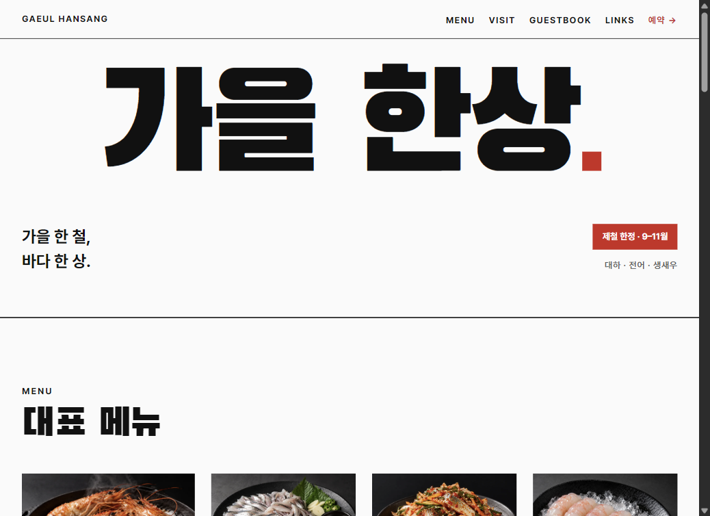
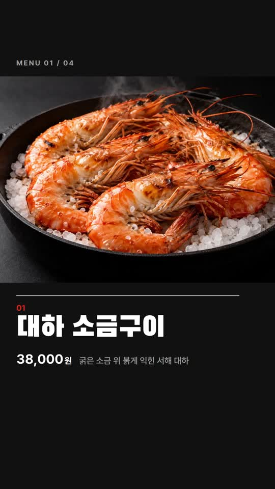
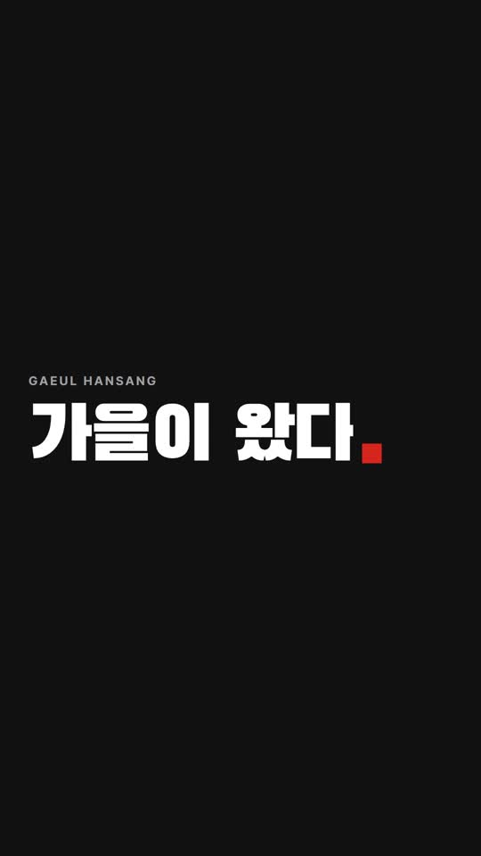
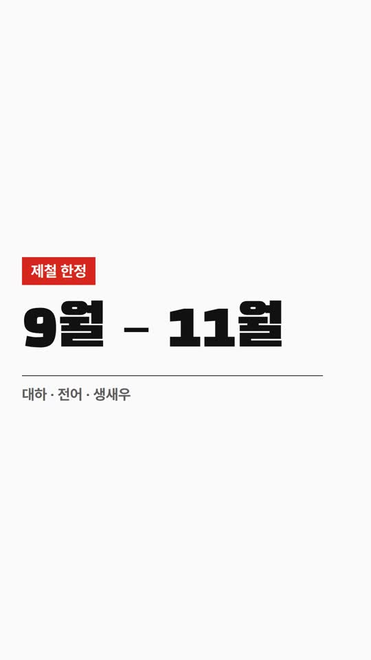
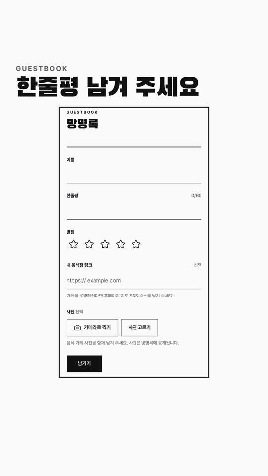
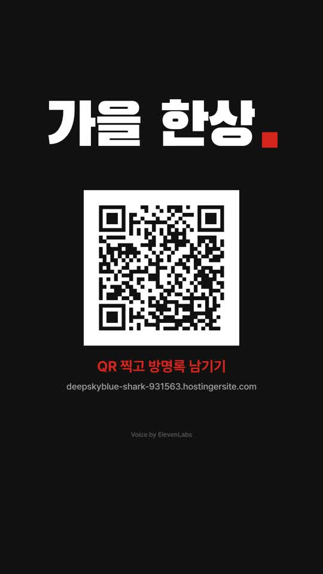

GAEUL HANSANG · 6주차 발표01 / 06 · 문제
가을 한상
9–11월에만 여는 제철 해산물 식당은
“지금 뭘 파는지”를 알리기 어렵고,
손님 후기는 여기저기 흩어진다.
- 01제철 한정 — 메뉴·영업 기간이 매년 바뀐다
- 02후기 분산 — 지도 앱·SNS마다 따로 쌓인다
- 03사장님 혼자 — 개발자 없이 운영해야 한다
장소영 · 특이점 빌더스가상의 식당으로 만든 실습 프로젝트 (메뉴·가격은 가안)
WHAT I BUILT02 / 06 · 만든 것
한 페이지 식당 사이트 + 방명록
- 01메뉴·영업 정보 — 대표 메뉴 4종, 제철 배지, 오시는 길Refero 무드 조사 → 21st.dev 컴포넌트 → design.md → 제작
- 02방명록 — 별점·한줄평, 카메라로 사진 첨부, 사장님 답글Supabase DB·Storage, RLS로 손님은 쓰기만·사장님만 답글
- 03이웃 맛집 링크 — 손님이 다른 가게를 추천http(s) 링크만 허용(DB 검사 + 화면 검사)
- 04자동 배포 — main에 push하면 GitHub Actions가 Hostinger로 배포QR 섹션, 404 “점검 중이에요” 페이지

배포 주소
deepskyblue-shark-931563
.hostingersite.com
DEMO03 / 06 · 데모 영상

20초 릴스 소개 영상
같은 콘티(5장면·나레이션)로 세 가지 방식으로 만들어 비교




| 방식 | 만드는 법 | 다시 뽑기 | 한 줄 평 |
|---|---|---|---|
| Claude Code만 | ffmpeg 필터 | 25초 | 가장 빠름, 표현력 낮음 |
| HyperFrames | HTML + GSAP | 72초 | 새로 만들 때 균형 최고 |
| Remotion | React | 418초 | 버전 여러 개 찍어낼 때 |
DAILY AUTOMATION · 7주차04 / 06 · 일상 자동화
매일 아침 6:40, 출근길이 먼저 온다
집 나서기 전 지하철·버스 앱을 번갈아 여는 대신,
필요한 것만 텔레그램 한 통으로 받는다.
- 01공공 오픈 API 두 곳공공데이터포털 TAGO 버스도착정보 · 서울 열린데이터광장 실시간 지하철 도착
- 02Claude Code로 만든 스크립트망포(수인분당선) → 수원 환승 → 진위(1호선). 진위까지 안 가는 서동탄·병점행은 걸러 냄. 실시간이 안 되면 시간표로 대신
- 03Hermes 예약 작업평일 06:40 · LLM 없이 스크립트 출력을 그대로 전달(no-agent)
- 04텔레그램으로 도착인증키는 스크립트가 아닌 별도 .env에만 보관
Hermes 봇평일 06:40
🚇🚌 출근 교통 알림
망포 → 수원 (수인분당선 인천 방면)
- • 인천행 — 전역 도착
- • 인천행 — [7]번째 전역 (보정)
수원 환승 → 진위 (1호선 천안·신창 방면)
- • 신창행 — [5]번째 전역 (군포)
- • 천안행 (급행) — [6]번째 전역 (금정)
🚌 수원버스터미널(2213)
- • 300번 — 1분 후 (1정거장 전)
- • 81번 — 13분 후 (9정거장 전)
- • 300-1번 — 21분 후 (12정거장 전)
공공데이터포털열린데이터광장Hermes cronTelegram
LEARNED05 / 06 · 배운 점
AI에게 “기준”을 먼저 준다
- 01디자인 문서가 결과를 정한다design.md(색·글꼴·간격 토큰) 하나로 사이트·영상·발표 화면이 같은 얼굴이 됐다
- 02조사 → 문서 → 제작 순서레퍼런스를 먼저 보고 결정한 뒤 문서로 고정하니 수정이 줄었다
- 03콘티 7요소목적·길이·화면비·장면·주소·브랜드 색·확인 루프를 적으면 영상이 원샷에 가까워진다
- 04보안은 화면이 아니라 DB에서공개 키를 써도 RLS·컬럼 권한·check 제약으로 막을 것만 막는다
- 05막히면 환경부터 의심Windows 드라이브(WSL)에서 렌더가 느리고 끊겼다 → 번들·렌더 분리로 해결
- 06외부에 닿는 일은 사람이 확인배포·DB 쓰기·제출은 실행 전에 확인받는 규칙을 CLAUDE.md에 둔다
NEXT06 / 06 · 다음 계획
다음 계획
- 01진짜 가게 정보 채우기주소·전화·영업시간 자리표시자를 실제 값으로, 지도·예약 링크 연결
- 02영상 30초 버전“오시는 길” 장면을 더해 릴스·매장 TV용으로
- 03사장님 화면 다듬기답글 알림, 부적절한 글 숨기기
- 04같은 방식으로 업무에 적용연구 데이터관리 자동화 시스템(PCR 트러블슈팅 기록) — 11/15 마감
가을 한상
가을 한 철, 바다 한 상.
deepskyblue-shark-931563.hostingersite.com